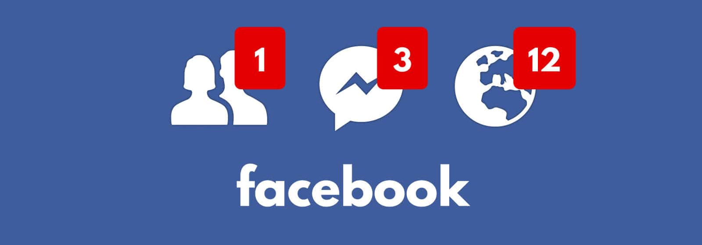
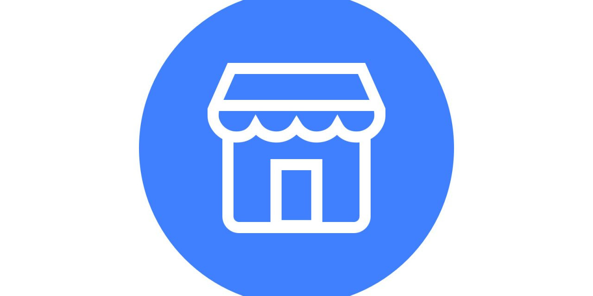
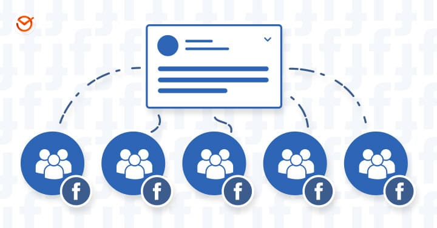

Facebook
¿Qué es Facebook?
Facebook es una red social y servicio de redes sociales en línea. Permite a los usuarios conectarse con amigos y familiares,
compartir fotos, videos, y actualizaciones de estado, así como interactuar con contenido de interés.
Fue creado en 2004 por Mark Zuckerberg junto con otros estudiantes de la Universidad de Harvard: Eduardo Saverin,
Andrew McCollum, Dustin Moskovitz y Chris Hughes.
Características y Funciones
- Perfiles de usuario: Es donde los usuarios pueden compartir información personal,
fotos, videos y actualizaciones de estado.
- Timeline: Es un flujo cronológico donde los usuarios pueden ver y publicar actualizaciones.
- Páginas y Grupos: Estos son espacios dedicados para empresas, comunidades, y grupos con intereses comunes.
- Marketplace: Es una plataforma la cual se utiliza para la compra y venta de productos entre usuarios.
- Messenger: Es un servicio de mensajería instantánea independiente que permite la comunicación entre usuarios.
- Eventos y Notificaciones: Estos facilitan la organización de eventos y la interacción continua.

|

|

Impacto Social y Cultural
Facebook ha cambiado radicalmente la forma en que las personas se comunican, comparten información y consumen contenido.
Algunas áreas clave de impacto incluyen:
- Comunicación:Ha facilitado la comunicación global, permitiendo a las personas
mantenerse conectadas sin importar la distancia.
- Marketing y Publicidad: Facebook ha revolucionado la publicidad digital, permitiendo a las empresas
segmentar y dirigir anuncios a audiencias específicas basadas en datos demográficos y de comportamiento.
- Noticias e Información: Facebook se ha convertido en una fuente importante de noticias para muchas
personas, aunque también ha sido criticado por la propagación de noticias falsas y desinformación.
- Activismo: Ha servido como una plataforma para el activismo social y político, permitiendo la
organización de movimientos y protestas a gran escala.
- Efectos en la Salud Mental: El uso excesivo de Facebook y otras redes sociales ha sido asociado
con problemas de salud mental, como ansiedad, depresión y adicción a la tecnología.
Regresar al menu
|